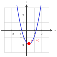
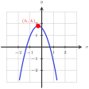
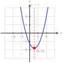
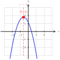
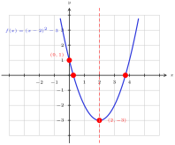
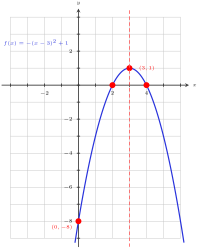
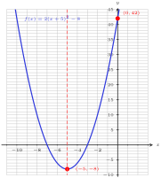
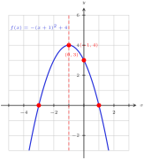
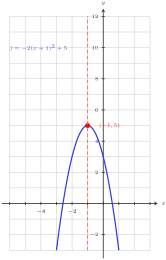

Definition 153. Quadratic Function.
A quadratic function is a function that can be written in the form
\begin{equation*}
f(x) = ax^2 + bx + c, \quad a \neq 0
\end{equation*}
That is, it is an equation of degree 2.








